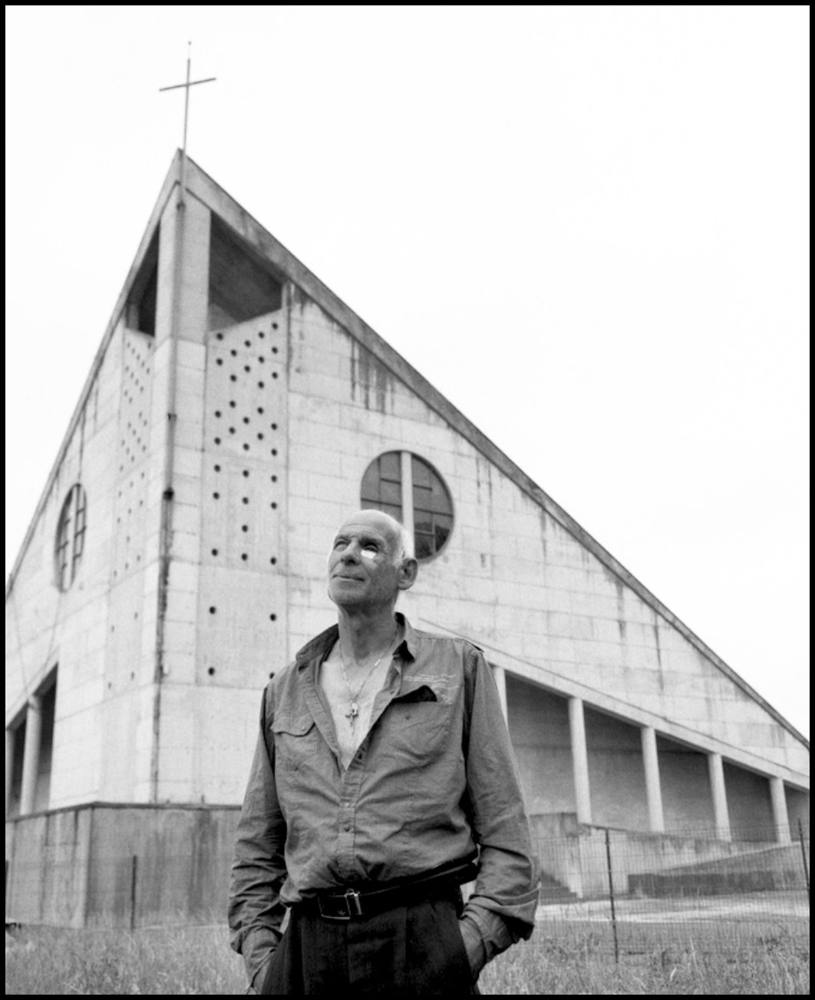
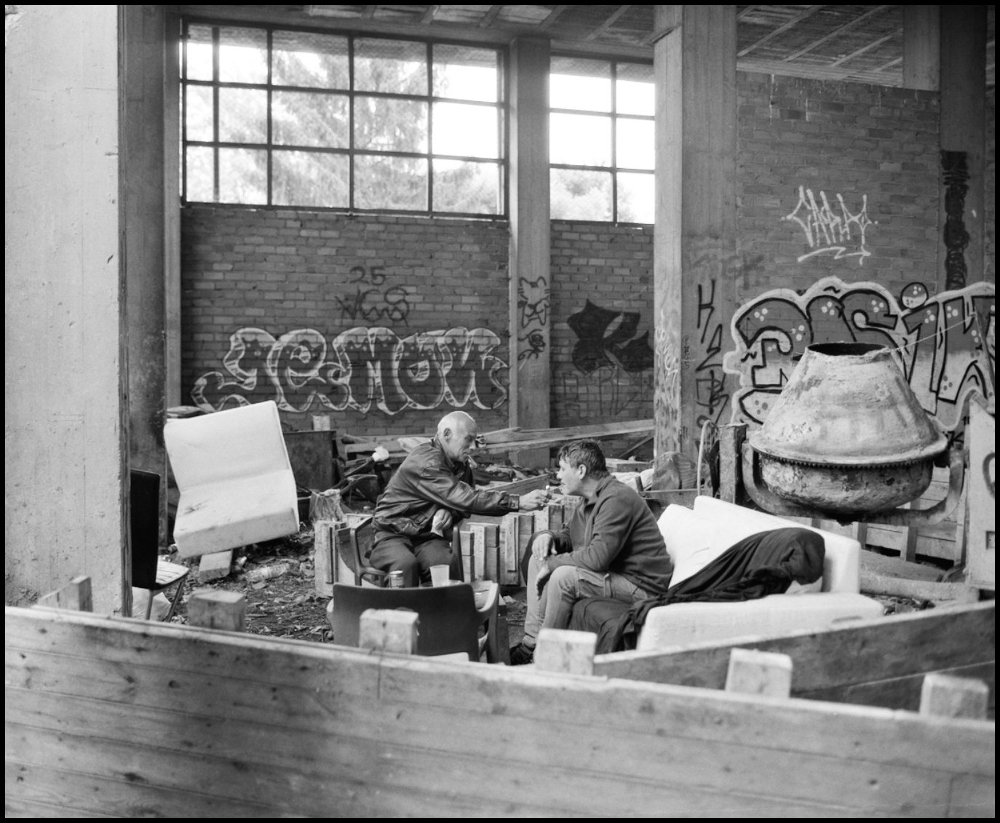
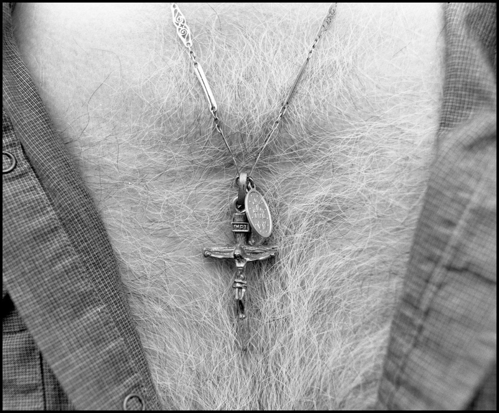
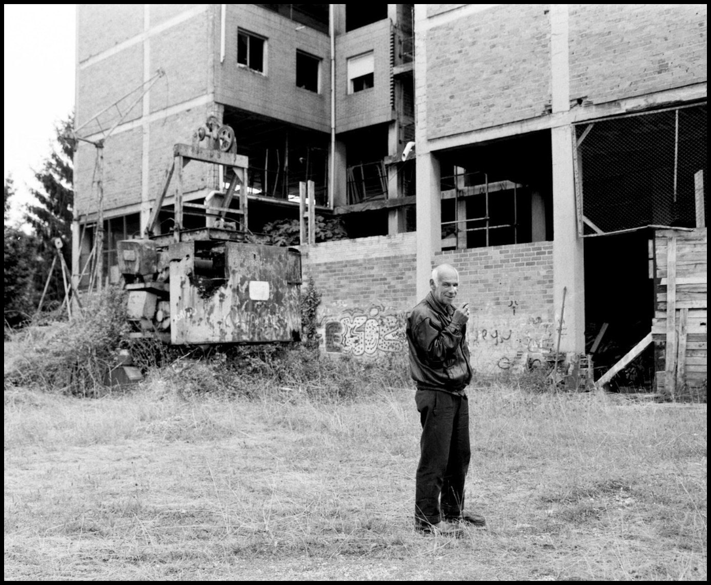
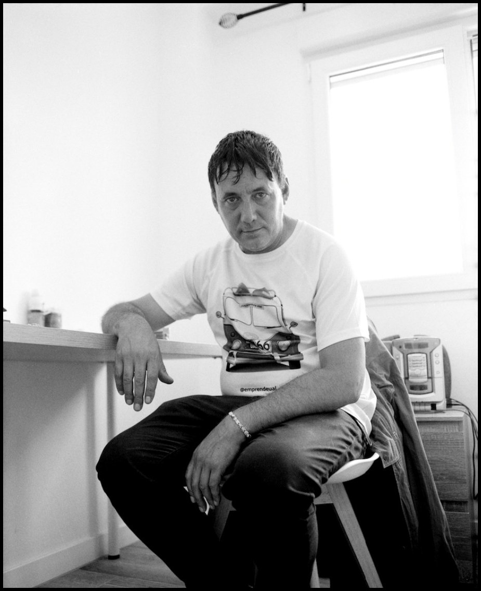
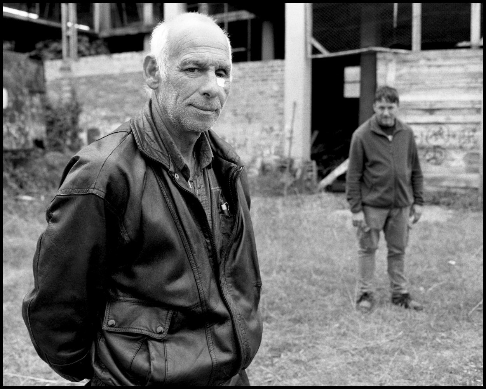
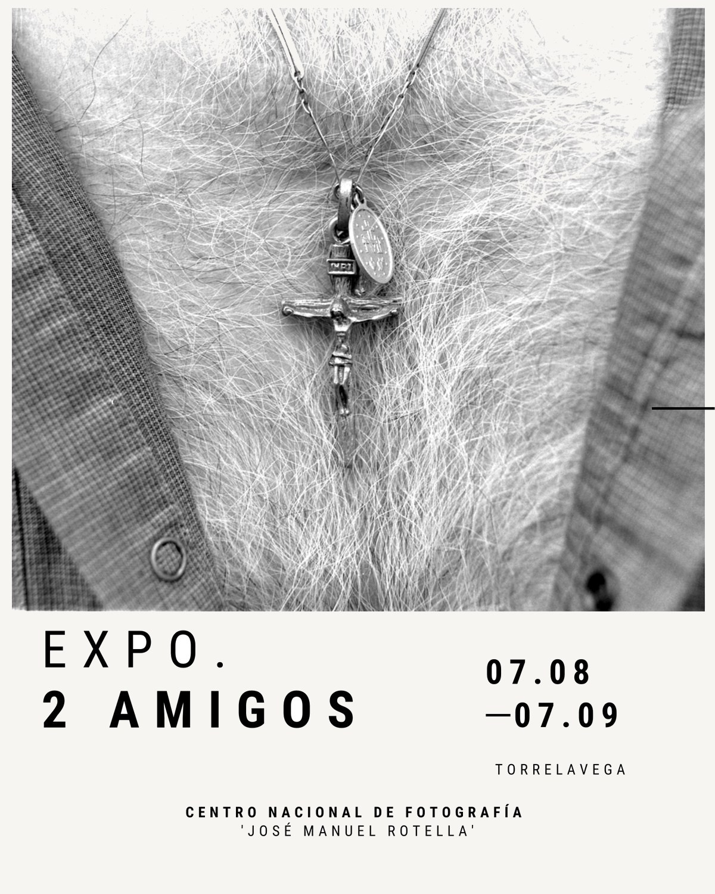
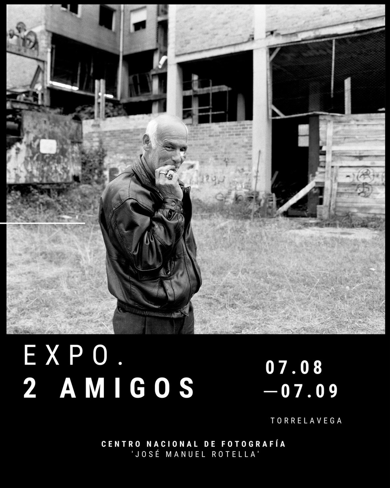

2 amigos
Tras viajar por el norte de la península, Pedro y Tino ‘el Tigre’ encontraron refugio en el albergue para personas sin hogar de Torrelavega, gestionado por la Asociación Nueva Vida. Un retrato del sinhogarismo y un homenaje a la amistad.

Sobre el proyecto
A través de la mediación de la Asociación, Pedro vive en un piso en el barrio Covadonga y ha encontrado un puesto de trabajo en el Ayuntamiento. Tino ‘el Tigre’ sigue en situación de calle mientras se organiza para cumplir su sueño: poner en marcha un negocio de alquiler de limusinas.
Es frecuente que las personas en situación de calle convivan con problemas de salud mental, adicciones y una profunda soledad. La invisibilización del sinhogarismo hace que quienes lo padecen se encuentren aislados de la sociedad.
Además de pretender sensibilizar sobre esta realidad, 2 amigos es un homenaje a la amistad.




Exposición
Centro Nacional de Fotografía ‘José Manuel Rotella’, Torrelavega. Del 7 de agosto al 7 de septiembre de 2026.


Dossier de presentación
El proyecto completo en 20 páginas: textos y fotografías.
Descargar el dossier (PDF, 6 MB) ↓¿Te interesa una copia?
Una selección de las fotografías de esta galería está disponible en copia fine art, firmada y numerada. Ver las copias fine art →